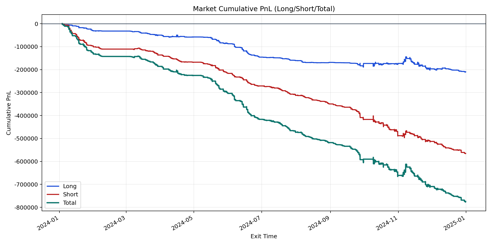
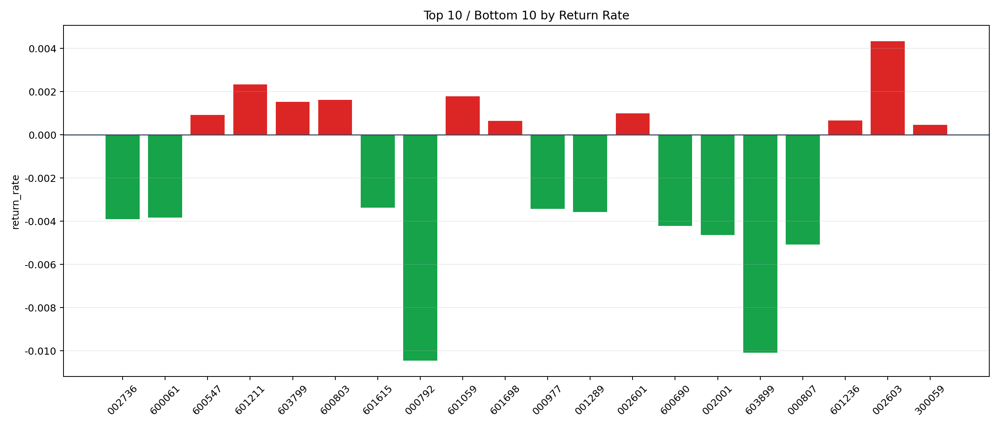

| repo_root | /home/haoranyou/data/output/dynamic_AUM_TAKER |
|---|---|
| period_months | 12 |
| period_label | 2024-01-03_to_2024-12-31 |
| start_time | 2024-01-03 09:54:47 |
| end_time | 2024-12-31 14:36:42 |
| n_trades | 39507 |
| n_symbols | 117 |
| total_pnl | -774365.8645000014 |
| long_total_pnl | -209181.6997499954 |
| short_total_pnl | -565184.1647500059 |
| total_entry_notional | 716153983.0 |
| long_entry_notional | 296563054.0 |
| short_entry_notional | 419590929.0 |
| total_return_rate | -0.0010812840295269313 |
| long_return_rate | -0.000705353202054614 |
| short_return_rate | -0.0013469885206932248 |
| top_symbols_by_return | ["002603", "601211", "601059", "600803", "603799", "002601", "600547", "601236", "601698", "300059"] |
| bottom_symbols_by_return | ["000792", "603899", "000807", "002001", "600690", "002736", "600061", "001289", "000977", "601615"] |

